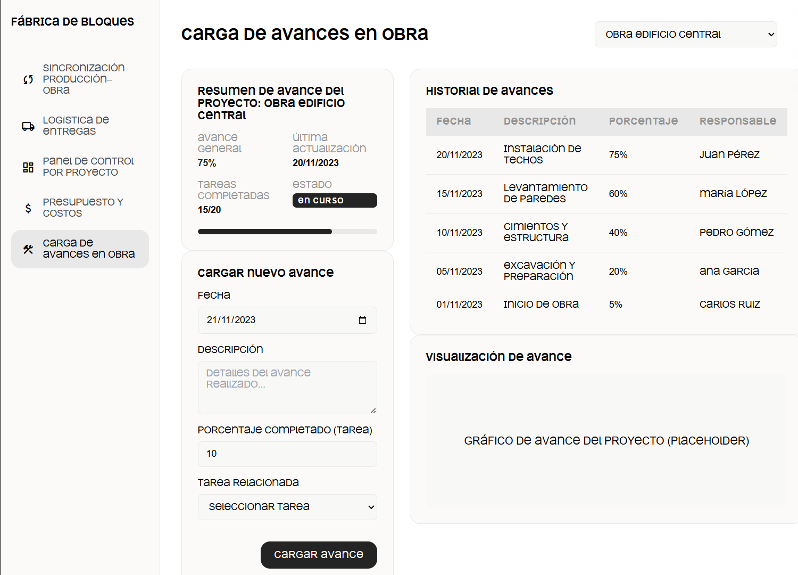
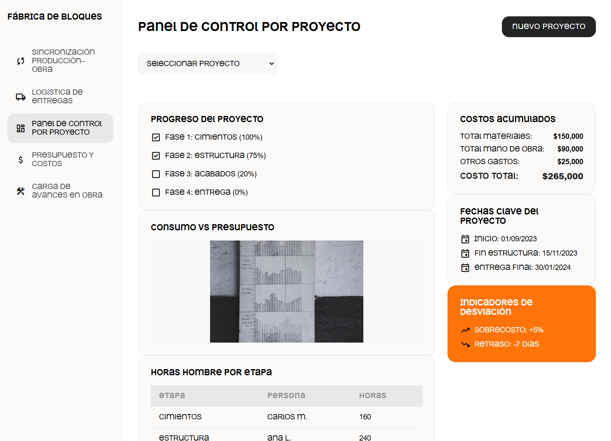
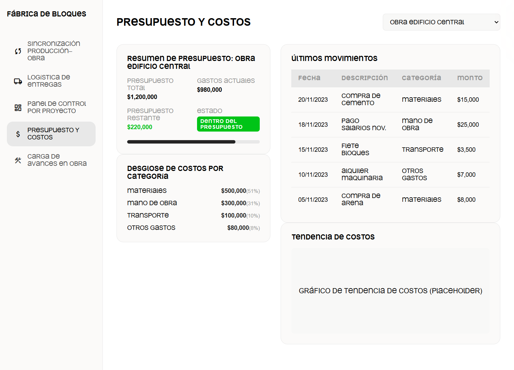
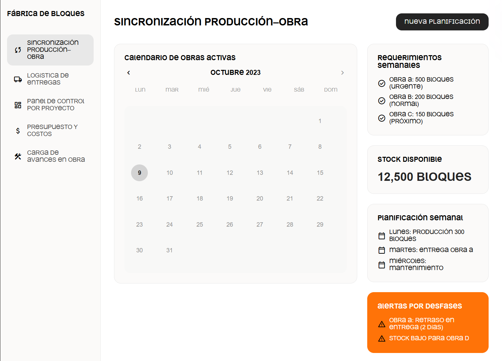
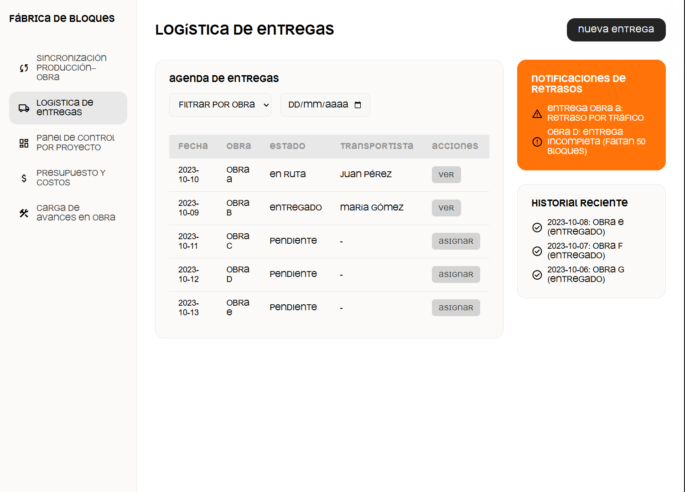
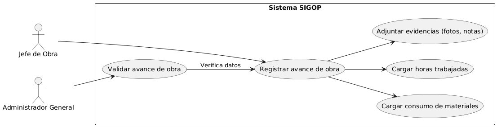
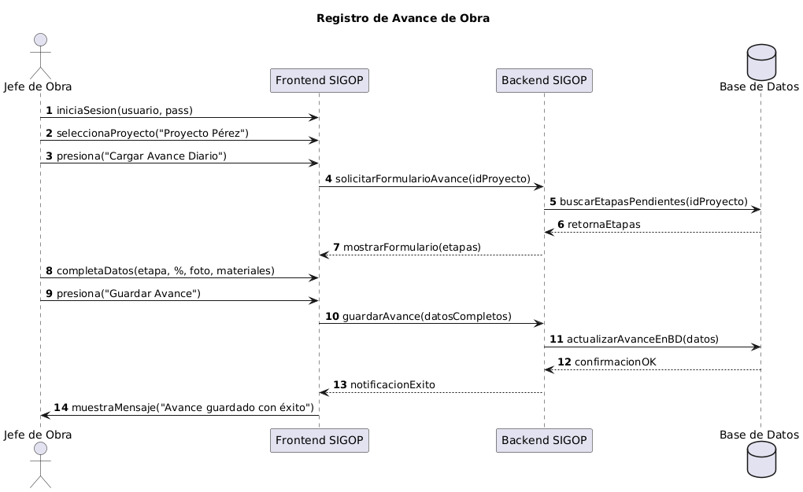

1. Introducción
Presentación de la Organización
ArquiBlock es una empresa en crecimiento dedicada a la fabricación de bloques de hormigón celular y a la construcción de módulos habitacionales bajo la modalidad "llave en mano". Su propuesta de valor se centra en ofrecer una alternativa de construcción rápida, eficiente y de alta calidad, posicionándose como una solución superior a las casas prefabricadas livianas tradicionales gracias a la solidez y excelentes propiedades de aislación de su sistema constructivo.
Metodología de Trabajo
Para llevar a cabo el análisis, se utilizó una metodología de relevamiento cualitativa, combinando técnicas de entrevista semiestructurada para comprender la visión del negocio, y observación directa asistida para identificar los flujos de trabajo y cuellos de botella operativos. Posteriormente, se aplicaron herramientas como el Análisis Sistémico y FODA para estructurar un diagnóstico completo.
2. Diagnóstico Organizacional
Problemáticas Detectadas
- Falta de Visibilidad de Costos y Rentabilidad: Incapacidad para determinar la ganancia exacta por proyecto.
- Descoordinación entre Producción y Obra: Desconexión que genera cuellos de botella y demoras en las entregas.
- Gestión Manual y Fragmentada: Procesos clave gestionados con herramientas informales (WhatsApp, pizarras, Excel).
- Dependencia Crítica del Dueño: Las operaciones fundamentales recaen sobre una sola persona, limitando la escalabilidad.
Análisis Sistémico (TGS)
El sistema actual de ArquiBlock carece de un bucle de retroalimentación (feedback) formal y efectivo. Al no poder medir con precisión la rentabilidad de sus salidas (proyectos terminados), no tienen la información necesaria para ajustar y optimizar sus entradas y procesos (ej. corregir precios, mejorar planificación). Esta ausencia de feedback es la justificación sistémica para la necesidad de un Sistema de Información.
Análisis FODA
La matriz FODA resume la situación estratégica, conectando las debilidades internas con las oportunidades del entorno.
| FORTALEZAS (F) | DEBILIDADES (D) | |
|---|---|---|
| OPORTUNIDADES (O) |
Estrategias FO (Ofensivas - Maxi-Maxi) 1. Lanzar una campaña de marketing digital (O3, O4) enfocada en la calidad y ahorro energético del producto (F1), mostrando obras terminadas (F4) para captar al nicho de mercado insatisfecho con las prefabricadas (O2). 2. Desarrollar un modelo de negocio para franquicias o socios constructores, apalancándose en el proceso de obra estandarizado (F2) y el conocimiento técnico (F3) para crecer sin depender exclusivamente de la propia capacidad (O1). |
Estrategias DO (Reorientación - Mini-Maxi) 1. Implementar un sistema de gestión de proyectos de bajo costo (O3) para integrar la información, solucionar la falta de control de costos (D1) y la trazabilidad del inventario (D4). 2. Utilizar el nuevo sistema para crear un "presupuestador online" que, aprovechando la demanda del mercado (O2), permita a los clientes configurar su módulo y obtener un presupuesto preliminar, automatizando parte del trabajo del dueño (D5). |
| AMENAZAS (A) |
Estrategias FA (Defensivas - Maxi-Mini) 1. Usar el argumento de venta comprobable (F4) y la calidad superior del producto (F1) para crear un "manual de comparación" que neutralice a la competencia de bajo precio (A1). 2. Diversificar la oferta hacia módulos más pequeños o ampliaciones (oficinas de jardín, quinchos), utilizando el proceso de obra eficiente (F2), para captar clientes en contextos económicos recesivos (A3). |
Estrategias DA (Supervivencia - Mini-Mini) 1. Estandarizar 2 o 3 modelos de módulos habitacionales para optimizar la producción limitada (D2) y reducir exposición a la volatilidad de precios de insumos (A2). 2. Establecer un protocolo de producción que contemple pronósticos climáticos (A4) y vincule cada lote a un cliente, evitando errores de entrega (D4) y manejando expectativas (D5). |
3. Propuesta del Sistema "SIGOP"
Para dar respuesta a las problemáticas detectadas, se propone el **Sistema de Información Integrado para Gestión de Obras y Producción (SIGOP)**, un sistema web centralizado que cruza datos de producción, logística, avances y costos.
Historias de Usuario y Soluciones de Interfaz
El sistema se diseñó en base a las necesidades de sus usuarios. A continuación, se muestra cómo cada interfaz propuesta resuelve una historia de usuario clave.
Historia 1: "Como jefe de obra, quiero registrar desde el celular el avance de cada etapa, para que el equipo tenga visibilidad en tiempo real."
Solución de Interfaz:
Historia 2: "Como administrador general, quiero ver en un panel todos los indicadores clave del proyecto, para tomar decisiones informadas."
Solución de Interfaz:
 Historia 3: "Como responsable de producción, quiero ver qué cantidad de bloques necesita cada obra para la próxima semana, para organizar la fabricación sin urgencias."
Solución de Interfaz:
 Modelado del Sistema (Diagramas)
Para detallar el funcionamiento, se modelaron los procesos clave del sistema.
Diagrama de Casos de Uso: Gestión de Avances
Diagrama de Secuencia: Registro de Avance
* Se incluirían los demás diagramas de manera similar... *
4. Conclusión
El análisis realizado a ArquiBlock revela una empresa con un producto de alta calidad y un gran potencial, pero cuyo crecimiento se ve obstaculizado por una gestión operativa y financiera basada en métodos manuales. La falta de un sistema integrado genera una cadena de problemas que culmina en la imposibilidad de medir la rentabilidad.
La propuesta del sistema SIGOP está diseñada para ser la columna vertebral digital de la empresa. Ataca directamente cada una de las debilidades detectadas:
- La incertidumbre financiera se convierte en control de rentabilidad en tiempo real.
- La descoordinación y el caos se transforman en planificación proactiva y sincronizada.
- La información fragmentada se consolida en una única fuente de la verdad.
La implementación de este sistema no solo representaría una mejora operativa, sino que le proporcionaría a ArquiBlock la herramienta estratégica fundamental que necesita para gestionar su crecimiento de manera sostenible, optimizar sus recursos y, finalmente, consolidar su posición como una marca de referencia en el mercado de la construcción modular.